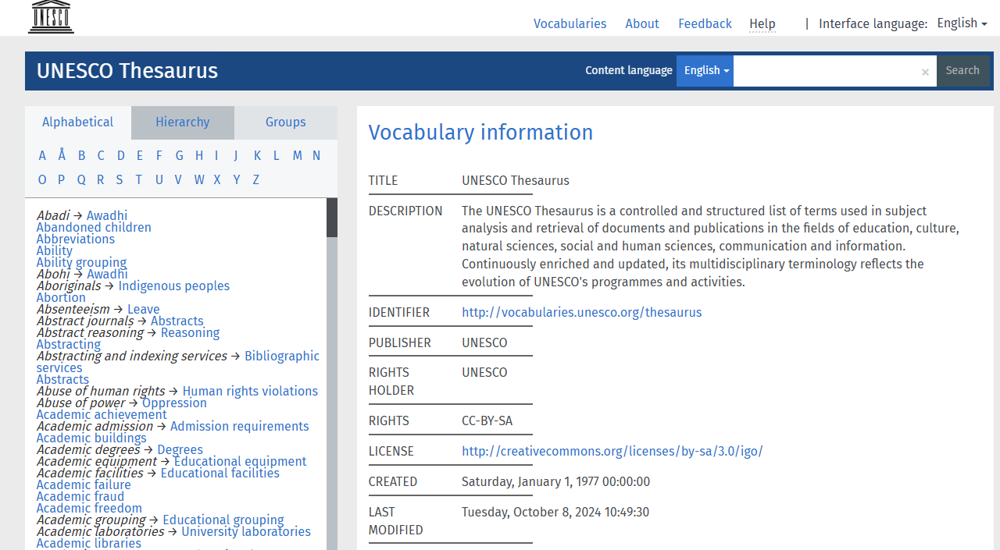

Resumo:
Compreender como o seu site deve se comunicar com o usuário é um passo importante para se aproximar e melhorar a experiência dele com o produto. O produto que possui o mesmo vocabulário que o usuário é muito mais fácil de ser utilizado, o usuário encontra o que deseja mais rápido e consegue entender o conteúdo.
O UX Writing (Escrita de Experiência do Usuário) é uma área do UX responsável por todo o conteúdo textual de um produto digital, como jogos, sites, aplicativos, entre outros. Dessa forma, este estudo é primordial para assegurar que o software se comunique de forma adequada com o usuário, permitindo que este realize suas tarefas eficientemente.
De acordo com Podmajersky (2019) para estabelecer uma boa comunicação é preciso primeiramente definir a voz da marca, a qual é determinada a partir dos princípios do produto, que consiste na união dos objetivos da marca, da empresa e da experiência. Enquanto os princípios do produto determinam como será a voz da marca, os seis aspectos da voz definem o tom, que varia conforme cada experiência. Por exemplo, quando uma pessoa conversa ao telefone, é possível identificar o seu estado emocional pelo seu tom, se ela está nervosa, ansiosa ou feliz, apesar de ser a mesma voz.
Quadro de voz (Fonte: Podmajersky )
A autora apresenta como exemplo fictício o site TAPP, um site de transporte de ônibus regional que informa sobre rotas, permite que os usuários comprem passagens e organize suas contas. O objetivo de experiência da empresa é transportar pessoas e fornecer um serviço online que seja eficiente, confiável e acessível. Por meio das informações fornecidas o quadro foi preenchido da seguinte forma:
Quadro de Voz TAPP (Fonte: adaptado de Podmajersky)
Como Aplicar
Após definir a voz da marca, é necessário alinhar a linguagem do usuário com as rotulações dos elementos do site, como botões, títulos e menus, de acordo com o público-alvo. Rosenfeld et al. (2015), fornece algumas diretrizes para uma rotulagem adequada desses elementos:
a) Consistência: manter o padrão dos rótulos em todo o sistema através:
• Estilo: não utilizar de forma aleatória as pontuações e palavras maiúsculas e minúsculas;
• Apresentação: manter o padrão de fontes, tamanhos do tipo, cores, respiros e agrupamentos;
• Sintaxe: os rótulos podem ser baseados em substantivo, verbos ou perguntas, como, por exemplo, “Entrar”, “Entre”, “Deseja entrar em sua conta?”, mas, independentemente da escolha, deve-se escolher apenas um para manter o padrão no sistema;
• Granularidade: é importante que os rótulos sejam semelhantes em termos de especificidade, por exemplo, uma categoria denominada “Contato” (abrangente) e outra denominada “Restaurantes Chineses” (específico), pode gerar confusão no usuário, sendo o ideal deixar as categorias em nível abrangente ou nível específico;
• Abrangência: os rótulos não devem conter lacunas perceptíveis sobre o que eles abrangem, como uma loja de roupas, que apresenta categorias como “blusa” e “camiseta”, mas não possui a categoria de “camisas”, dando a entender ao usuário que a loja não vende o produto, mesmo ela fornecendo;
b) Tabele os rótulos existentes: caso o sistema estiver em funcionamento, liste os rótulos existentes em um documento. Através desse exercício é possível obter um panorama, identificando as inconsistências e quais rótulos devem ser mantidos ou modificados;
c) Utilize vocabulários controlado: esses recursos são criados por profissionais de bibliotecas ou de áreas específicas que listam as palavras utilizadas para a busca de informações. Os documentos podem ser encontrados na internet, um exemplo de vocabulário controlado é o da UNESCO (Organização das Nações Unidas para a Educação, a Ciência e a Cultura);

Vocabulário Controlado (Fonte: UNESCO)
d) Compare: para um sistema novo, analise sistemas parecidos com a sua proposta. Dessa forma, é possível identificar padrões, quais rótulos funcionam ou não, e assim criar sua própria rotulagem;
e) Analise o conteúdo: através do próprio conteúdo do sistema é possível criar palavras-chave. Como o processo pode levar algum tempo, foque em títulos, resumos e sumários. Existem ferramentas que permitem a extração automática das palavras de forma gratuita, como o site Wordcount que utiliza Inteligência Artificial (IA) para realizar a extração;
f) Consultar os autores: solicite aos autores do conteúdo que sugiram os rótulos, como, por exemplo, pesquisadores e profissionais de relações públicas. Depois refine o que realmente pode ser aplicado ao sistema;
g) Defensores de usuários: são os profissionais que estão em constante contato com os usuários, como bibliotecários e o setor de suporte da empresa. Esses profissionais estão familiarizados com as necessidades dos usuários e, inclusive, possuem dados registrados sobre eles. Ou seja, são uma fonte valiosa para a criação de rótulos;
h) Conversando com o próprio usuário: por meio de exercícios, como:
• Card sorting aberto e fechado: no aberto os participantes agrupam os cartões com os rótulos e criam categorias, enquanto no fechado os pesquisadores definem a categoria primeiro e solicita aos participantes que agrupem os cartões conforme as categorias pré-estabelecidas;
• Listagem Livre: selecione um item e solicite ao usuário que ele faça um brainstorm de palavras para descrevê-lo. O exercício pode ser aplicado tanto pessoalmente, com lápis e papel, ou em pesquisas online;
i) Registro de pesquisa: por meio de logs de pesquisa é possível listar todas as palavras que os usuários utilizam para pesquisar no site e aplicá-las nos rótulos. Um recurso que pode ser útil nesse processo é o “Google Trends”, um site que lista os termos mais procurados pelas pessoas;
Pesquise e compare palavras-chaves (Fonte: Google)
Sendo assim, alinhar a voz da marca com a linguagem do usuário é crucial para a melhoria da experiência do site, facilitando a navegação e a compreensão do conteúdo.
Conclusão
Através do UX Writing é possível desenvolver uma interface que converse com o usuário, que o conteúdo seja entendido por ele, por ser utilizada uma linguagem que faz parte do seu dia a dia. Por isso é importante definir seu tom de voz que deve estar alinhado com os objetivos da empresa. Após a criação da voz da marca o próximo passo é compreender mais sobre o vocabulário do usuário, para isso existe várias ferramentas e formas de descobrir os termos que o usuário utiliza para pesquisar o que ele deseja encontrar no site.